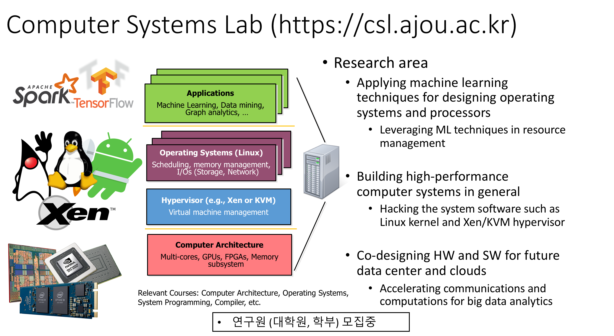

- JVM은 Java 언어로 작성된 애플리케이션이 동작하는데 중심이 되는 역할을 수행함
- JVM을 최신 하드웨어(CPU, GPU, FPGA 등)에 최적화 하여 성능을 개선하는 연구
- 한 가지 예로 garbage collection의 개선을 통해 효율성을 개선
- 기존의 Linux 운영체제에 구현되어 있는 리소스(메모리, 스토리지) 관리 기법을 머신 러닝 기법 적용을 통해서 가능성을 알아보는 연구
- 예를 들면 자원의 사용량을 예측할 때 머신 러닝을 적용하여 좀 더 정확히 예측을 하는 방안
- 코어의 수가 많아 짐에 따라 다양한 애플리케이션이 하나의 머신위에서 동작하는 경우가 많음
- 운영체제/애플리케이션 혹은 서로 다른 애플리케이션이 마이크로아키텍처 자원을 공유함으로써 발생하는 비효율성 분석
- 자원을 할당하거나 공유해서 사용하는 새로운 기법 제안 등
- 단일 시스템을 넘어서 분산된 컴퓨팅 환경에서 메모리 자원(Remote DMA)을 어떻게 관리 할 것인지에 관한 연구
- 메모리 접근의 비대칭성 (Non Uniform Memory Access)를 고려한 메모리 관리 기법 등